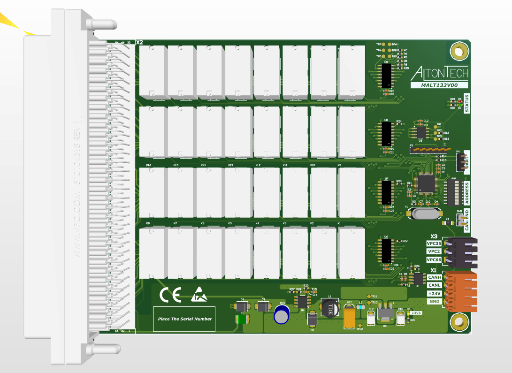
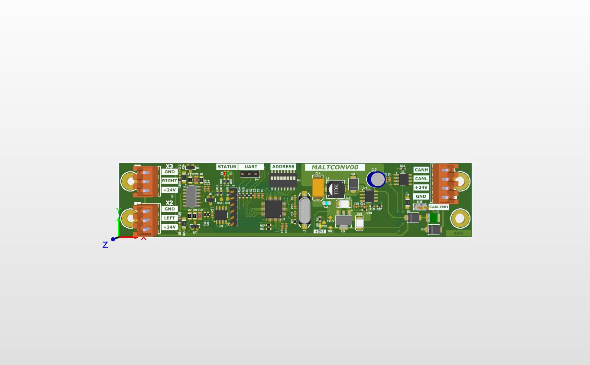
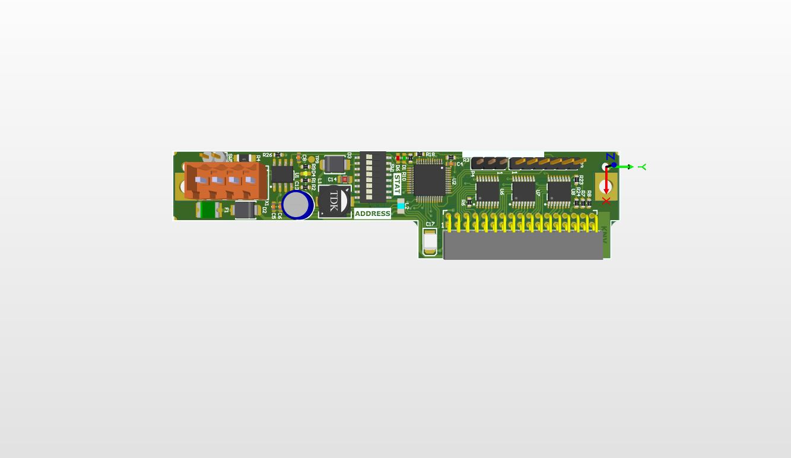

Felhasználói kéziköny
| Family Name | First Name | Leírás | Family/Option Code | |
 |
MALTMMI | MALTMMI |
|
0x00/0x00 |
 |
MALT40IO | MALT40IO |
|
0x01/0x?? |
|  | MALT132 | MALT132 |
|
0x03/0x00 |
 |
MALT132 | MALT23THV |
|
0x03/0x10 |
 |
MALT16PIN | MALT16PIN |
|
0x05/0x00 |
 |
MALT160T | MALT160T |
|
0x15/0x05 |
|  | MALT160T | MALTCON |
|
0x??/0x?? |
|  | MALT132 | MALT24VI |
|
0x03/0x11 |